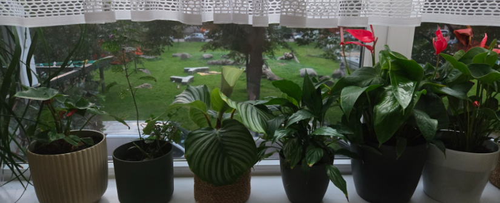
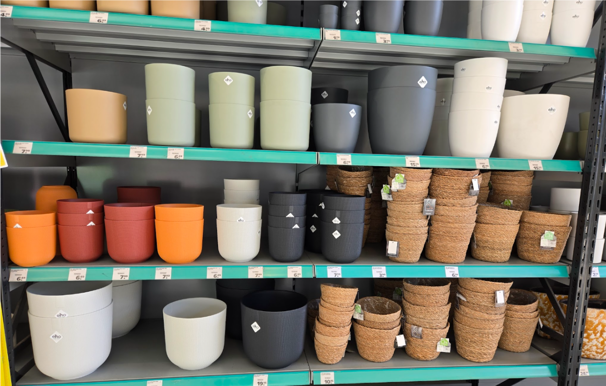
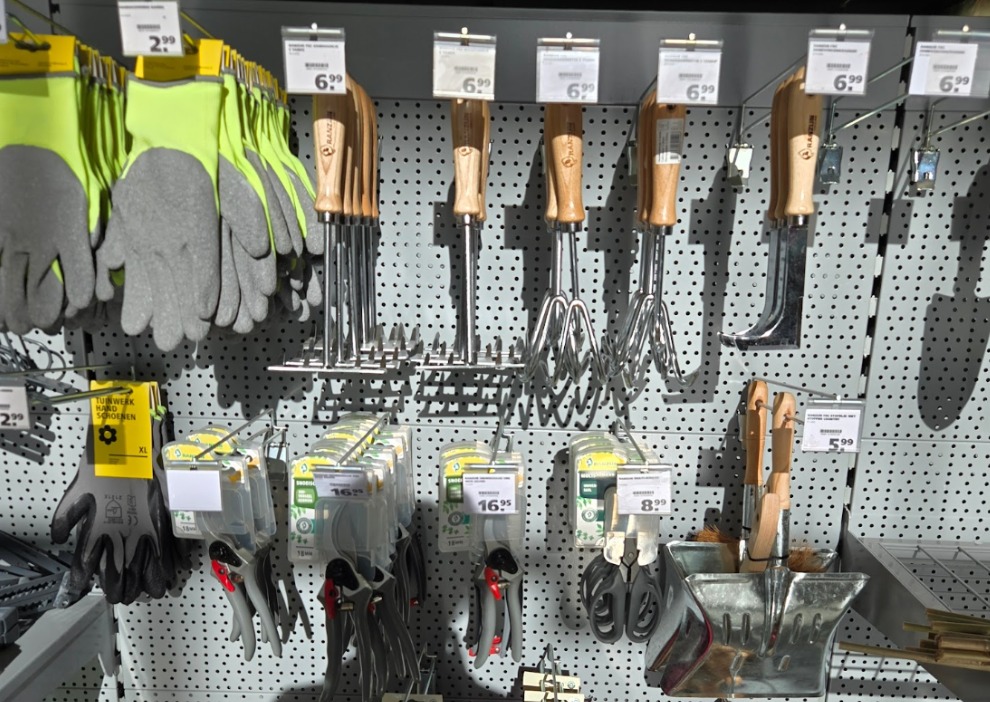

Find the Right Spot
The first step is finding a good place for your plants. Look at how much natural light different areas of your apartment receive throughout the day. A sunny windowsill can be perfect for plants that need lots of light, while plants that prefer lower light can be placed further away from the window. Think about your everyday routine too. A spot that is easy to see and reach makes it easier to remember to check on your plants and water them when needed.

Choose the Right Pots
Pots come in many different sizes and materials, but choosing one can actually be quite easy. Start by making sure the pot is large enough for the plant and has enough space for its roots to grow. Most importantly, look for pots with drainage holes. These allow extra water to escape instead of staying in the soil, which can cause problems for your plant and potentially damage your windowsill or furniture. Plant pots are easy to find, just go to any store with gardening supplies or even shops with house decorations.

Get Your Basic Supplies
You don’t need a huge collection of gardening equipment to get started. A few simple supplies are enough for most beginners.
Beginner essentials:
- Watering can or bottle
- Pots with drainage holes
- Suitable potting soil
- Basic gardening gloves
- A larger pot for future repotting
You can always add more supplies as your indoor garden grows. Start small, learn what your plants need, and build from there.
